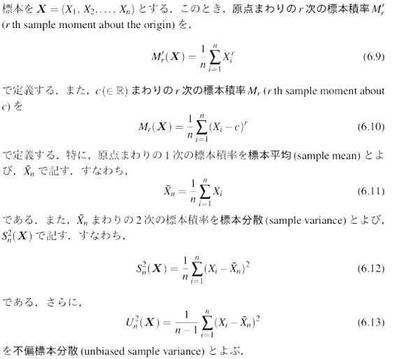

2021年 01月 13日
定義6.6 標本積率

μr′=E(Xn)
μr=E((X−μ)n)μ=E(X)=μ1′
定義6.7 標本共分散, 標本相関係数

Sxy=n1i=1∑n(xi−x)(yi−y)
C(X,Y)=n1∑(Xi−X)(Yi−Y)
定義6.7 標本積率の期待値と分散

証明
E(Mr′)=E(n1i=1∑nXir)=n1i=1∑nE(Xir)=n1nμr′=μr′
| 母集団 |
標本 |
| X |
X1,X2… |
| E(X)=μ |
E(Xi)=E(X)=μ |
| V(X)=σ2 |
V(Xi)=V(X)=σ2 |
| E(Xn)=μr′ |
E(Xir)=E(Xr)=μr′ |
原点まわりの r次の標本積率の期待値は, 母集団確率変数の原点まわりの r次の積率と一致する
V(Mr′)=V(n1i=1∑nXir)=n21i=1∑nV(Xir)=n21i=1∑n{E(Xi2r)−(E(Xir))2}=n21i=1∑n(μ2r′−(μr′)2)=n1(μ2r′−(μr′)2)
定義6.8 標本平均・標本分散の期待値と分散

証明
i)
E(X)=E(n1i=1∑nXi)=n1i=1∑nE(Xi)=n1nμ=μ
ii)
V(X)=V(n1i=1∑nXi)=n1i=1∑nV(Xi)=n21nσ2=nσ2
iii)
Tips
E(X)=E(Xi)=E(X)=μ
E(S2)=E(n1i=1∑n(Xi−X)2)=E(n1σ{(Xi−μ)−(X−μ)}2)=n1∑E[(Xi−μ)2]−n2∑E[(Xi−μ)(X−μ)]+n1∑E[(X−μ)2]
μ=E(Xi)より,E[(Xi−μ)=V(Xi)μ=E(X)より,E[(X−μ)=V(X)
ここで,
E[(Xi−μ)(X−μ)]=E[(Xi−μ)(n1j=1∑nXj−μ)]=E[(Xi−μ)(n1(j=1∑n(Xj−μ)))]=n1j=1∑nE((Xi−μ)(Xj−μ))=n1j=1∑nCov(Xi,Xj)
なので,
=n1∑E[(Xi−μ)2]−n2∑E[(Xi−μ)(X−μ)]+n1∑E[(X−μ)2]=n1∑V(Xi)−n22i=1∑nj=1∑nCov(Xi,Xj)+n1∑V(X)=n1nσ2−n22nσ2+n1nnσ2=σ2−n2σ2+n1σ2=nn−1σ2
Tips
∑i=j∑j=iCov(Xi,Xj)=0,∑i=j∑j=iV(Xi)=σ2

証明
E((X−μ)3)=E((n1i=1∑nXi−μ)3)=E[(n1∑(Xi−μ))3]=n31E[(∑(Xi−μ))3]=n31E[(Xi−μ)3]=n31nμ3=n2μ3
Tips
E(i=1∑j=1∑k=1∑(Xi−μ)(Xj−μ)(Xk−μ))=i=1∑j=1∑k=1∑E[(Xi−μ)(Xj−μ)(Xk−μ)]=i=1∑nE(Xi−μ)3
Cov(X,S2)=Cov(n1∑(Xi−μ),n1∑(Xi−μ)2−(X−μ)2)=Cov(n1∑(Xi−μ),n1∑(Xi−μ)2)−Cov(n1∑(Xi−μ),(X−μ)2)=n21∑(Cov(Xi−μ,(Xi−μ)2)−Cov(X−μ,(X−μ)2))=n21(E(Xi−μ)3−E((X−μ)3))=n21nμ3−n2μ3=n2n−1μ3
Tips
n1∑(Xi−X)2=n1∑((Xi−μ)−(X−μ))2=n1∑{(Xi−μ)2+(X−μ)2−2(Xi−μ)(X−μ)}
標本平均と標本分散の Cov は μ3 で表される.（3次の積率）
※正規分布 気数字の積率は0